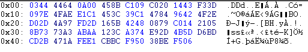
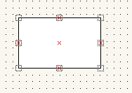
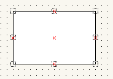
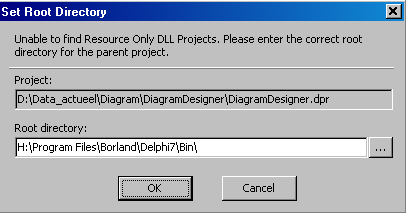

may, 2005
Diagram Design notes
IN STREAMS
//SM
var
GLOBAL_TEXTPOS_X :integer;
Created new class TStateMachineObject, derived from TShapeObject (is TFlowChartObject better ?),
stored in new file StateMachineObject.pas (copied from FlowChartObject.pas).
function TStateMachineObject.CreateCopy: TBaseObject;
(not in CreateByKind, because it's only used for the default templates)
function TStateMachineObject.ValidProperties: TObjectProperties;
function TStateMachineObject.GetProperty(Index: TObjectProperty): Integer;
opCustomLinks : Result:=Integer(@Links);
procedure TStateMachineObject.SetProperty(Index: TObjectProperty; Value: Integer);
opCustomLinks : begin
I:=High(Links);
Links:=Copy(PFloatPointArray(Value)^);
I:=High(Links);
I:=I;
//gaat netjes van 4 naar 6 !
// for I:=High(Links)+1 to I do NotifyLinkPointDeleted(I);
procedure TStateMachineObject.SaveToStream(Stream: TBaseStream);
Count:=Length(Links);
Stream.Write(Count,2);
Stream.Write(Links[0],Count*SizeOf(TFloatPoint));
procedure TStateMachineObject.LoadFromStream(Stream: TBaseStream; FileVersion: Integer);
Stream.Read(Count,2);
SetLength(Links,Count);
Stream.Read(Links[0],Integer(Count)*SizeOf(TFloatPoint));
bug in streamutils
procedure LoadStringList(List: TStrings; Stream: TBaseStream);
replaced by
procedure LoadStringList(var List: TStrings; Stream: TBaseStream);
Hexdump of just 1 TStateMachine, in the upper-left corner
ik had hier op zijn minst $81 verwacht, subcode van TStateMachine
ook 13 ($0D) otStateMachineObject komt niet voor ??

NoFloatMapFileSupport, UseStyleForm
Edit Connections
on edit properties, save OPTIONS in a global property AAP of PropertyEditorForm
class function TPropertyEditorForm.Execute(EditObject: TBaseObject; const Options: TDesignerSetup): Boolean;
begin
with Create(nil) do
try
aap:=options;
on pressing EDIT button in PropertyEditor, store OPTIONS in property BEER
procedure TPropertyEditorForm.EditLinksButtonClick(Sender: TObject);
begin
with TLinkEditorForm.Create(nil) do
try
List:=Copy(Links);
beer:=aap;
in LINKEDITOR, an image is placed, with a mousedown event
procedure TLinkEditorForm.Image1MouseDown(Sender: TObject;
Button: TMouseButton; Shift: TShiftState; X, Y: Integer);
begin
memo1.lines.add(inttostr(x)+'//'+inttostr(y));
x:=round(round(x/(beer.grid.x*0.0015))*(beer.grid.x*0.0015));
y:=round(round(y/(beer.grid.y*0.0015))*(beer.grid.y*0.0015));
image1.Canvas.Pixels[x,y]:=clblack;
SetLength(List,Length(List)+1);
List[High(List)]:=FloatPoint(X/image1.width,Y/image1.height);
FormShow(nil);
end;
from main:
procedure TMainForm.PropertiesActionExecute(Sender: TObject);
var
Modified : Boolean;
Node : TTreeNode;
begin
if GetActiveLayer.SelectCount>1 then Modified:=TPropertyEditorForm.Execute(GetActiveLayer,Options)
else if GetActiveLayer.SelectCount=1 then Modified:=TPropertyEditorForm.Execute(ActiveObject,Options)
else
begin
Node:=TreeView.Selected;
Modified:=TPropertyEditorForm.Execute(TBaseObject(Node.Data),Options);
in property editor
class function TPropertyEditorForm.Execute(EditObject: TBaseObject; const Options: TDesignerSetup): Boolean;
var
Properties, ModifiedProperties : TObjectProperties;
PropertyIndex : TObjectProperty;
I : Integer;
TempRect, PosRect : TRect;
S : Single;
begin
Properties:=EditObject.ValidProperties;
with Create(nil) do
try
aap:=options;
if EditObject is TPropertyObject then
Caption:=Caption+' ('+IntToStr(TPropertyObject(EditObject).List.SelectCount)+' objects)';
procedure TPropertyEditorForm.EditLinksButtonClick(Sender: TObject);
begin
with TLinkEditorForm.Create(nil) do
try
List:=Copy(Links);
if ShowModal=mrOk then
begin
Links:=Copy(List);
Include(PropertiesModified,opCustomLinks);
PanelLinks.Caption:=Format(rsDLinkPointsDefined,[Length(Links)]);
end;
finally
Free;
end;
end;
LinkEditor
options=
TDesignerSetup = object
DisplayUnits : TDisplayUnits;
Grid : TPoint;
ShowGrid : Boolean;
ReversePrint : Boolean;
UndoHistory : Integer;
ClipboardMetafileScale : Integer;
DictionaryPath : string;
procedure LoadSettings(Setup: TProgramSetup);
procedure SaveSettings(Setup: TProgramSetup);
end;
Snap to Grid
When inserting a new (basic) object, snap to grid is not correct (picture on the left, topline of the rectangle, but sometimes upto 3 borders are not snapped to the grid).
When moving each individual border slightly, the borders are snapped to the grid ok (picture on the right)
 
TFloatEdit, etc
Problems with loading forms, because of missing components, like TfloatEdit.
Building a new package with ValueEdits.pas doesn't work, because of errors compiling StyleForm: (*$IMPORTEDDATA ON*)
Therefore
Now package with ValueEdits compiles and installs correctly
Loading Delphi
When loading the Delphi project, and everything when selecting the project in the projectgroup,
I get the following error message,
after canceling everything goes ok.
